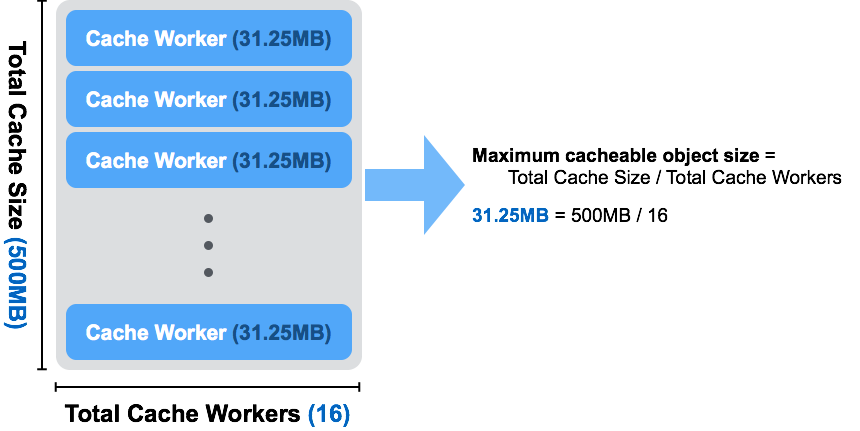

LeoGateway Settings¶
Prior Knowledge¶
LeoGateway is a multi-protocols storage proxy, which supports REST-API over HTTP, Amazon S3-API1 and NFS v32. LeoGateway provides the object cache feature to handle requests efficiently and to keep the high performance of your storage system.
Other Configurations¶
If you want to customize settings like where to place leo_gateway.conf, what user is starting a LeoGateway process and so on, refer For Administrators / Settings / Environment Configuration for more information.
Configuration¶
LeoGateway Configurations¶
| Item | Description |
|---|---|
| LeoManager Nodes | |
| managers | Name of LeoManager nodes. This configuration is necessary for communicating with LeoManager's master and LeoManager's slave.( Default: [manager_0@127.0.0.1, manager_1@127.0.0.1] ) |
| LeoGateway Basic | |
| protocol | Gateway Protocol - [s3/rest/embed/nfs] ( Default: s3 ) |
| HTTP Related (S3/REST) | |
| http.port | Port number the Gateway uses for HTTP connections ( Default: 8080 ) |
| http.num_of_acceptors | Numbers of processes listening for connections ( Default: 128 ) |
| http.max_keepalive | Maximum number of requests allowed in a single keep-alive session ( Default: 4096 ) |
| http.layer_of_dirs | Maximum number of virtual directory levels ( Default: 12 ) |
| http.ssl_port | Port number the Gateway uses for HTTPS connections ( Default: 8443 ) |
| http.ssl_certfile | SSL Certificate file ( Default: ./etc/server_cert.pem ) |
| http.ssl_keyfile | SSL key file ( Default: ./etc/server_key.pem ) |
| http.headers_config_file | HTTP custom header configuration file ( Default: ./etc/http_custom_header.conf ) |
| http.timeout_for_header | HTTP timeout for reading header ( Default: 5000, Unit: |
| http.timeout_for_body | HTTP timeout for reading body ( Default: 15000, Unit: |
| Bucket Related | |
| bucket_prop_sync_interval | Synchronization Interval of Bucket Properties ( Default: 300, Unit: |
| NFS-related configurations | |
| nfs.mountd.port | Mountd’s port number ( Default: 22050 ) |
| nfs.mountd.acceptors | Mountd’s the number of acceptors ( Default: 128 ) |
| nfs.nfsd.port | NFSd’s port number ( Default: 2049 ) |
| nfs.nfsd.acceptors | NFSd’s the number of acceptors ( Default: 128 ) |
| Large object processing configuration | |
| large_object.max_chunked_objs | Maximum number of chunked objects ( Default: 1000 ) |
| large_object.chunked_obj_len | Length of a chunked object. This value must be >= large_object.reading_chunked_obj_len ( Default: 5242880, Unit: |
| large_object.threshold_of_chunk_len | Threshold when object is chunked ( Default: 5767168, Unit: |
| large_object.reading_chunked_obj_len | Read length of a chunked object. This value must be <= large_object.chunked_obj_len ( Default: 5242880, Unit: |
| Cache configuration | |
| cache.http_cache | Enable HTTP-Cache mode, working like Varnish/Squid. Otherwise as Object Cache ( Default: false ) |
| cache.cache_workers | Number of cache workers ( Default: 16 ) |
| cache.cache_ram_capacity | Memory Cache Capacity, divide across workers. This has to satisfy (8 * 1024 * 1024) * cache.cache_workers >= cache.cache_ram_capacity ( Default: 268435456, Unit: |
| cache.cache_disc_capacity | Disk Cache Capacity, divide across workers. This has to satisfy (8 * 1024 * 1024) * cache.cache_workers >= cache.cache_disc_capacity ( Default: 524288000, Unit: |
| cache.cache_disc_threshold_len | Threshold when object is stored in disk cache ( Default: 1048576, Unit: |
| cache.cache_disc_dir_data | Directory for disk cache data ( Default: ./cache/data ) |
| cache.cache_disc_dir_journal | Directory for disk cache journal ( Default: ./cache/journal ) |
| HTTP-Cache related | |
| cache.cache_expire | Cache expiry time ( Default: 300, Unit: |
| cache.cache_max_content_len | Maximum length of cached object ( Default: 1048576, Unit: |
| cache.cachable_content_type | Object types to be cached |
| cache.cachable_path_pattern | Path pattern(s) to be cached (regular expression) |
| Watchdog / REX | |
| watchdog.rex.is_enabled | Enables or disables the rex-watchdog which monitors the memory usage of Erlangs RPC component. ( Default: true ) |
| watchdog.rex.interval | An interval of executing the watchdog processing ( Default: 10, Unit: |
| Watchdog / CPU | |
| watchdog.cpu.is_enabled | Enables or disables the CPU-watchdog which monitors both CPU load average and CPU utilization ( Default: false ) |
| watchdog.cpu.raised_error_times | Times of raising error to a client ( Default: 5 ) |
| watchdog.cpu.interval | An interval of executing the watchdog processing ( Default: 10, Unit: |
| watchdog.cpu.threshold_cpu_load_avg | Threshold of CPU load average ( Default: 5.0 ) |
| watchdog.cpu.threshold_cpu_util | Threshold of CPU utilization ( Default: 100 ) |
| Watchdog / IO (Erlang VM Internal Traffic) | |
| watchdog.io.is_enabled | Enables or disables the IO-watchdog which monitors the Erlang VM Internal Traffic ( Default: false ) |
| watchdog.io.interval | Watchdog interval ( Default: 1, Unit: |
| watchdog.io.threshold_input_per_sec | Threshold input per second ( Default: 134217728, Unit: |
| watchdog.io.threshold_output_per_sec | Threshold output per second ( Default: 134217728, Unit: |
| Timeout | |
| timeout.level_1 | Timeout when put object to LeoStorage (~65536 bytes) ( Default: 5000, Unit: |
| timeout.level_2 | Timeout when put object to LeoStorage (~131071 bytes) ( Default: 7000, Unit: |
| timeout.level_3 | Timeout when put object to LeoStorage (~524287 bytes) ( Default: 10000, Unit: |
| timeout.level_4 | Timeout when put object to LeoStorage (~1048576 bytes) ( Default: 20000, Unit: |
| timeout.level_5 | Timeout when put object to LeoStorage (1048576~ bytes) ( Default: 30000, Unit: |
| timeout.get | Timeout when get object from LeoStorage ( Default: 30000, Unit: |
| timeout.ls | Timeout when list object from LeoStorage ( Default: 30000, Unit: |
| Log | |
| log.log_level | Log level:
( Default: 1 ) |
| log.is_enable_access_log | Enables or disables the access-log feature ( Default: false ) |
| log.erlang | Destination of log file(s) of Erlang's log ( Default: ./log/erlang ) |
| log.app | Destination of log file(s) of LeoStorage ( Default: ./log/app ) |
| log.member_dir | Destination of log file(s) of members of storage-cluster ( Default: ./log/ring ) |
| log.ring_dir | Destination of log file(s) of RING ( Default: ./log/ring ) |
| Other Directories Settings | |
| queue_dir | Directory of queue for monitoring "RING" ( Default: ./work/queue ) |
| snmp_agent | Directory of SNMP agent configuration ( Default: ./snmp/snmpa_gateway_0/LEO-GATEWAY ) |
Erlang VM's Related Configurations¶
| Item | Description |
|---|---|
| nodename | The format of the node name is <NAME>@<IP-ADDRESS>, which must be unique always in a LeoFS system( Default: storage_0@127.0.0.1 ) |
| distributed_cookie | Sets the magic cookie of the node to Cookie. - See also: Distributed Erlang ( Default: 401321b4 ) |
| erlang.kernel_poll | Kernel poll reduces LeoFS' CPU usage when it has hundreds (or more) network connections. ( Default: true ) |
| erlang.asyc_threads | The total number of Erlang aynch threads ( Default: 32 ) |
| erlang.max_ports | The max_ports sets the default value of maximum number of ports. - See also: Erlang erlang:open_port/2 ( Default: 64000 ) |
| erlang.crash_dump | The output destination of an Erlang crash dump ( Default: ./log/erl_crash.dump ) |
| erlang.max_ets_tables | The maxinum number of Erlagn ETS tables ( Default: 256000 ) |
| erlang.smp | -smp enable and -smp start the Erlang runtime system with SMP support enabled.( Default: enable ) |
| erlang.schedulers.compaction_of_load | Enables or disables scheduler compaction of load. If it's enabled, the Erlang VM will attempt to fully load as many scheduler threads as mush as possible. ( Default: true ) |
| erlang.schedulers.utilization_balancing | Enables or disables scheduler utilization balancing of load. By default scheduler utilization balancing is disabled and instead scheduler compaction of load is enabled, which strives for a load distribution that causes as many scheduler threads as possible to be fully loaded (that is, not run out of work). ( Default: false ) |
| erlang.distribution_buffer_size | Sender-side network distribution buffer size (unit: KB) ( Default: 32768 ) |
| erlang.fullsweep_after | Option fullsweep_after makes it possible to specify the maximum number of generational collections before forcing a fullsweep, even if there is room on the old heap. Setting the number to zero disables the general collection algorithm, that is, all live data is copied at every garbage collection. ( Default: 0 ) |
| erlang.secio | Enables or disables eager check I/O scheduling. The flag effects when schedulers will check for I/O operations possible to execute, and when such I/O operations will execute. ( Default: true ) |
| process_limit | The maxinum number of Erlang processes. Sets the maximum number of simultaneously existing processes for this system if a Number is passed as value. Valid range for Number is [1024-134217727] ( Default: 1048576 ) |
Notes and Tips of the Configuration¶
Cache Consistency between LeoGateway and LeoStorage¶
LeoGateway's cache feature does not depend on the consistency level of a cluster. There is a possibility of object inconsistency.
LeoGateway requests a storage node to compare a cached object's hash value with its stored object's hash value. LeoGateway selects a LeoStorage's node from RING, a distributed hash table by a target object name, then LeoGateway requests a LeoStorage node of the redundant node. If the requested object is inconsistent in the replicas and LeoGateway cached it, a client may get inconsistent objects.
If you need strong consistency on a LeoFS system, you can disable the cache setting.
cache.cache_ram_capacity = 0
cache.cache_disc_capacity = 0Configuration related to Disk Cache¶
A total number of directories to store cache files is equal to cache.cache_workers. A maximum size of a cacheable object per a directory has been determined by cache.cache_disc_capacity / cache.cache_workers. If the size of a requested object more than the maximum size, LeoGateway avoids storing the object into the disk cache.
And also, when size of a requested object more than cache.cache_max_content_len, LeoGateway similarly refuses to store the object into the disk cache.
